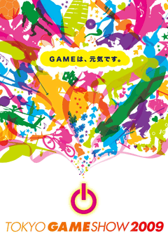

2009年5月27日
報道関係資料
東京ゲームショウ2009
メインビジュアル決定
活気に満ちあふれるゲームの世界を表現
社団法人コンピュータエンターテインメント協会
日経BP社
社団法人コンピュータエンターテインメント協会（略称：CESA、会長：和田洋一、所在地：東京都港区西新橋）主催、日経BP社（社長：平田保雄、所在地：東京都港区白金）が共催する「東京ゲームショウ2009」［会期：2009年9月24日（木）～27日（日）、会場：幕張メッセ（千葉市美浜区）］のメインビジュアルが、このほど決定しました。
元気なGAMEで世の中をもっと元気に！
もっと明るく！もっと楽しく！
「東京ゲームショウ2009」のメインビジュアルは、ゲーム機の起動マークから様々なシルエットが元気良く次から次へと飛び出すイメージで、今年のテーマである「GAMEは、元気です。」を表現しました。
鮮やかな色合いで彩られたシルエットは、ゲームを構成する様々な要素を意味しています。
そしてゲームを起動することで、これらのシルエットにあるような楽しさや面白さ、さらに元気のパワーが世の中に解き放たれていく様子をダイナミックに描きました。
「東京ゲームショウ2009」では、このビジュアルのようにコンピュータエンターテインメントの素晴らしさや、活気あふれる当産業の最新情報を世界に向けて発信していきます。
同時に、夢と希望に満ちあふれた「東京ゲームショウ2009」の会場で、1人でも多くの人に「ゲームのパワー」を体感していただき、より明るく、楽しく、元気な 未来を築くための活力の一助になることを目指したいと考えております。「東京ゲームショウ2009」で元気なゲームの世界を、ぜひ体験してください。
※メインビジュアルをご使用いただく場合は、プレス向けダウンロードサイトにアクセスしてください。
【TGS INFORMATION 2】
東京ゲームショウ2009出展申込の締め切りは6月12日（金）。
東京ゲームショウ事務局では、引き続き「東京ゲームショウ2009」に関する情報を発信していきます。今後のスケジュールといたしましては、6月12日（金）の出展申込締切日を経た後、7月1日に展示規模や出展社の発表を行う予定です。また、主催者企画などの詳細情報も合わせて発表いたします。
昨年は209の出展社、過去最多の1,768の出展小間数を記録しました。ゲーム産業の最新情報を全世界に発信する東京ゲームショウは、今年もさらなる発展を目指して参ります。
※出展に関する詳しい情報は、東京ゲームショウ公式ホームページ内の“出展のご案内”でご覧いただけます。
※出展に関するお問い合わせは、日経BP社（TEL03-6811-8082）までご連絡ください。
「東京ゲームショウ2009」開催概要
| 名称 | 東京ゲームショウ2009（TOKYO GAME SHOW 2009） |
|---|---|
| 主催 | 社団法人コンピュータエンターテインメント協会（CESA） |
| 共催 | 日経BP社 |
| 後援 | 経済産業省（予定） |
| 会期 | 2009年9月24日（木） ビジネスデイ 10:00～17:00 2009年9月25日（金） ビジネスデイ 10:00～17:00 2009年9月26日（土） 一般公開日 10:00～17:00 2009年9月27日（日） 一般公開日 10:00～17:00 |
| 会場 | 幕張メッセ（千葉県千葉市美浜区） |
| 来場者目標 | 18万人 |
| 出展社見込数 | 170社 |
| 募集小間数 | 1550小間 |
| 実施予定コーナー | 一般展示 アドバンスド モバイル＆PC コーナー （新設）※ 物販コーナー キッズコーナー ビジネスソリューションコーナー ゲームスクールコーナー ※携帯電話機やスマートフォン向けゲームなどのモバイルコンテンツをはじめ、PCオンラインゲーム、専用PC、周辺機器などを紹介します。 |
| 入場料 | 一般（中学生以上）・・・前売1000円 ／ 当日1200円 小学生以下・・・入場無料 |
［出展社募集スケジュール］
| 出展申込締切日 | 2009年6月12日（金） |
|---|---|
| 小間位置選定会 | 2009年6月24日（水）・・・40小間以上（隣接小間がない形状）の出展社 2009年7月1日（水）・・・40小間未満（隣接小間がある形状）の出展社 |
| 出展社説明会 | 2009年7月1日（水） |